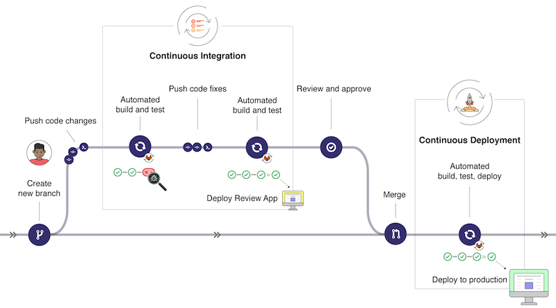

Minimize Operational Burden

Few other mobile apps have grown at Instagram’s pace. Scaling a product to support that much growth in such a short period of time would be extremely challenging for any team. What’s surprising, however, is that when Instagram was acquired in April 2012, it had only 13 employees. Its ratio of users to employees was over 3 million to one—much higher than most other companies. This was a testament to just how effective each member of that small team was.
Keeping a system up and running, scaling a feature to support more users, fixing the bugs that surface, transferring an ever-growing body of institutional knowledge to new engineers—all of these costs continue to tax a team’s resources, even after a feature or system ships. When a team is small, minimizing that tax is critical.
“Unfortunately, it is tough to fully internalize this cost. Even the smartest and most talented engineers can become enamored with the hottest new technologies and dream of ways of incorporating them into their next project. They’ll try out a new system that’s yet to find major adoption, a new language that few team members know, or some experimental piece of infrastructure, all without factoring in the future maintenance costs. These decisions impose an ongoing cost on their time and reduce their engineering efficiency.”
This is why minimizing operational burden is so critical
Whenever they could, the Instagram team picked proven and solid technologies instead of shiny or sexy new ones. Whereas many other startup teams adopted trendy NoSQL data stores and then struggled to manage and operate them, the Instagram team stuck with tried and true options like PostgreSQL, Memcache, and Redis that were stable, easy to manage, and simple to understand.
Embrace Operational Simplicity
One of the core engineering tenets is to do the simple thing first,” Krieger explained. “We apply that to product. We apply that to hiring. We apply it to engineering. We have posters that say it.
When asked what he’d learned from designing the iPod, Steve Jobs responded, “When you first start off trying to solve a problem, the first solutions you come up with are very complex, and most people stop there. But if you keep going, and live with the problem and peel more layers of the onion off, you can oftentimes arrive at some very elegant and simple solutions. Most people just don’t put in the time or energy to get there.
When engineering teams don’t focus on doing the simple thing first, they either end up being less effective over time because their energy is spent on a high upkeep cost, or they reach a point where the operational burden gets so high that they’re forced to simplify their architecture.
Having too complex of an architecture imposes a maintenance cost in a few ways:
Engineering expertise gets splintered across multiple systems
Increased complexity introduces more potential single points of failure
New engineers face a steeper learning curve when learning and understanding the new systems
Effort towards improving abstractions, libraries and tools get diluted across the different systems.
When system complexity grows faster than the engineering team’s ability to maintain the system, productivity and progress suffer. More and more time gets diverted towards maintenance and figuring out how things work; less time is spent finding new ways to build value
Instagram and Pinterest demonstrate that the descipline to focus on simplicity provides high leverage:
It's fine to experiment with a new programming language for a prototype or a toy project, but think hard before using it in a new production system.
Proponents of new data stores promise that their systems solve the problems in battle-tested relational databases like MySQL and PostgreSQL. Before using these new storage systems in production, however, do your research. Find out if other teams have successfully used them for projects of a similar scope and whether they have actually been able to maintain and scale them with lower operational burden than more standard solutions.
When tackling a new problem, consider whether repurposing an existing abstraction or tool would be simpler than developing a custom solution.
If you’re processing large amounts of data, consider whether the data is actually large enough such that you need a distributed cluster, or whether a single, beefy machine will suffice.
Remember: do the ismple thing first. Always ask:
What's the simplest solution that can get the job done while also reducing our future operational burden?
Build system to fail fast
Many engineers associate robustness and reliability with an absence of crashes. They spend their energy adding workarounds to automatically handle software errors so that their programs can continue to function. Workarounds may include setting misconfigured parameters to default values, adding catch-all exception handlers to deal with unexpected issues, and swallowing unexpected return values.
These techniques cause software to fail slowly.
This is often in exchange for less decipherable bugs further down the road
Slowly failing systems muddy the sources of code errors, making it difficult for us to discover what went wrong.
“[In] a system that fails fast …, when a problem occurs, it fails immediately and visibly. Failing fast is a nonintuitive technique: ‘failing immediately and visibly’ sounds like it would make your software more fragile, but it actually makes it more robust. Bugs are easier to find and fix, so fewer go into production” (Jim Shore, "IEEE Software")
Examples of failing fast include:
Crashing at startup time when encountering configuration errors
Validating software inputs, particularly if they won’t be consumed until much later
Alerting engineers about any invalid or inconsistent program state as early as possible
Failing fast doesn’t necessarily mean crashing your programs for users. You can take a hybrid approach: use fail-fast techniques to surface issues immediately and as close to the actual source of error as possible; and complement them with a global exception handler that reports the error to engineers while failing gracefully to the end user.
Relentlessly Automate Mechanical Tasks
The cost of automating (including learning how to automate) may initially be higher than the cost of doing the job manually. However, if the experience increases the efficiency with which you can automate in the future, that skill will compound and pay for itself as you use automation for more and more problems.
Facebook runs one of the largest MySQL database installations in the world, with many thousands of servers across multiple data centers. Each Facebook user’s profile is assigned to one of many thousands of partitions, called shards, and each database server contains multiple shards. If a server fails (and tens or hundreds might fail on a given day) or a shard gets too big, one or more shards need to be redistributed to another database server.
There are 2 types of automation:
Automating the mechanics of a sequence of steps tends to be straightforward and testable.
Automating the right decisions to make, particularly in the context of building systems that can heal and repair themselves when things go wrong, turns out to be much more challenging.
And so, for a long time, to balance database shards at Facebook, an engineer ran a script to look for the most overloaded machines and then ran another script to move some shards off of those machines. The mechanics of moving a shard from one database server to another was heavily automated, but a human decided which of thousands of shards to move where. It would be many years before Facebook reached the point in their development where it was worthwhile to tackle the harder task of decision automation. They ultimately deployed a system called
MySQL Pool Scannerto automatically rebalance shards.
See more at Under the hood: MySQL Pool Scanner (MPS)
Automation can produce diminishing returns as you move from automating mechanics to automating decision-making. Given your finite time, focus first on automating mechanics. Only after you’ve picked all the low-hanging fruit should you try to address the much harder problem of automating smart decisions.
Make batch process idempotent
As you automate more operations, your time’s leverage increases—but so does the probability that some of your automation will fail. Scripts executing a sequence of actions without human intervention (also known as batch processes) that you schedule to run periodically, will hit network timeouts or unexpected hiccups. Scripts processing large amounts of data, increasingly common as data analytics become key to more businesses, work most of the time, but they take a long time to retry or recover when they fail. If you’re not careful, the time required to maintain your automation will climb. Therefore, minimizing that burden is a high-leverage activity.
One technique to make batch processes easier to maintain and more resilient to failure is to make them idempotent. An idempotent process produces the same results regardless of whether it’s run once or multiple times.
When idempotence isn’t possible, structuring a batch process so that it’s at least retryable or reentrant can still help. A retryable or reentrant process is able to complete successfully after a previous interrupted call. A process that’s not reentrant typically leaves side effects on some global state that prevents it from successfully completing on a retry. For instance, a failed process might still be holding onto a global lock or have emitted partial output; designing the process so that it knows how to handle these inconsistent states can reduce the amount of manual handholding required later. Make each process either fail entirely or succeed entirely.
Idempotence also offers another benefit that many effective engineers take advantage of: the ability to run infrequent processes at a more frequent rate than strictly necessary, to expose problems sooner
Rajiv Eranki, a former Dropbox engineer responsible for scaling infrastructure from 4K to 40M users, even suggests scheduling scripts intended only for manual invocation (like scripts to fix user state or to run diagnostics) to be run regularly to detect errors.
Running batch processes more frequently also allows you to handle assorted glitches transparently
Idempotence and reentrancy can reduce some of the complexity and recurring costs involved in maintaining automated and batch processes. They make automation cheaper, freeing you to work on other things.
Hone your ability to respond and recover quickly
At Netflix, engineers did something counterintuitive: they built a system called Chaos Monkey that randomly kills services in its own infrastructure... It turns out that this strategy actually makes their infrastructure more robust and reduces the pain of pager duty
"The best defense against major unexpected failures is to fail often."
How we handle failures plays a large role in our effectiveness. And at some point, it becomes higher leverage to focus our time and energy on our ability to recover quickly than on preventing failures in the first place. The better our tools and processes for recovering quickly from failures, and the more we practice using them, the higher our confidence and the lower our stress levels. This allows us to move forward much more quickly.
Simulating failures accurately is difficult, and because they happen infrequently, the payoff for handling them better seems lower than working on more pressing product issues. Recovery processes to handle server failures, database failovers, and other failure modes therefore tend to be inadequate at best.
One strategy for fixing this imbalance comes from Bill Walsh, former coach of the San Francisco 49ers. In The Score Takes Care of Itself, Walsh discusses a strategy called scripting for success
Walsh wrote scripts, or contingency plans, for how to respond to all types of game scenarios.
Like Walsh, we too can script for success and shift our decision-making away from high-stakes and high-pressure situations and into more controlled environments. As engineers, we can even programmatically script our responses and test them to ensure that they’re robust. This is particularly important as an engineering organization grows and any infrastructure that can fail will begin to fail.
At Dropbox, the engineering team often simulates additional load for their production systems. Doing so enables them to artificially trigger issues sooner; when they hit a system limit that causes errors, they disable the simulated load and have ample time to investigate the issue.
Ask what if questions and work through contingency plans for handling different situations:
What if a critical bug gets deployed as part of a release? How quickly can we roll it back or respond with a fix, and can we shorten that window?
What if a database server fails? How do we fail over to another machine and recover any lost data?
What if our servers get overloaded? How can we scale up to handle the increased traffic or shed load so that we respond correctly to at least some of the requests?
What if our testing or staging environments get corrupted? How would we bring up a new one?
What if a customer reports an urgent issue? How long would it take customer support to notify engineering? How long for engineering to follow up with a fix?
Practicing our failure scenarios so that we can recover quickly applies more generally to other aspect of software engineering as well:
What if a manager or other stakeholder at an infrequent review meeting raises objections about the product plan?
What if a critical team member gets sick or injured, or leaves? How can we share knowledge so that the team continues to function?
..